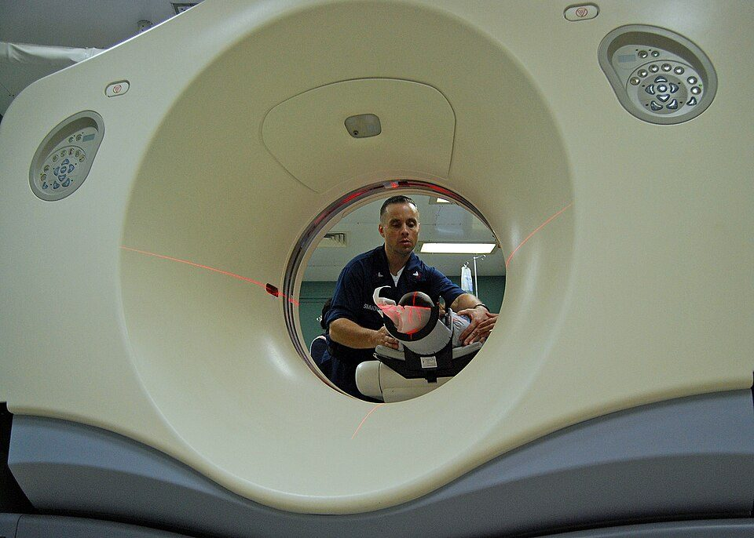

Información divulgativa. No sustituye la valoración de tu equipo médico ni sirve para decidir un tratamiento.


Para qué sirven
Las pruebas de imagen ayudan a detectar una lesión, a guiar la biopsia, a conocer la extensión (estadio) del cáncer, a planificar la cirugía o la radioterapia, a valorar la respuesta al tratamiento y a hacer el seguimiento. Cada prueba responde mejor a unas preguntas que a otras, por eso se eligen según el tumor y la pregunta clínica.
Las principales pruebas
| Prueba | Cómo funciona | Usos frecuentes |
|---|---|---|
| Ecografía | Ultrasonidos, sin radiación | Mama, tiroides, hígado, riñón, testículo, ganglios; guía de biopsias |
| Mamografía | Rayos X de baja dosis | Cribado y diagnóstico del cáncer de mama |
| TC (escáner) | Rayos X que crean cortes del cuerpo | Estudio de extensión en tórax, abdomen y pelvis; seguimiento |
| Resonancia magnética | Campo magnético, sin radiación | Cerebro, médula, hígado, recto, próstata, partes blandas, mama en casos seleccionados |
| PET-TC | Un trazador radiactivo (a menudo glucosa marcada) que se acumula en las zonas con mucha actividad | Linfomas, pulmón, melanoma y otros; detectar metástasis; valorar respuesta |
| Gammagrafía ósea | Trazador que se acumula en el hueso | Metástasis óseas en próstata o mama |
Lo que conviene saber
- No todas las pruebas son útiles en todos los cánceres. Hacer pruebas «por si acaso» puede encontrar hallazgos sin importancia que llevan a más pruebas y ansiedad.
- Una imagen puede sugerir un cáncer, pero casi siempre hace falta una biopsia para confirmarlo.
- En el seguimiento, la imagen se interpreta junto con los síntomas, la exploración y el tratamiento recibido. Tras la radioterapia o la inmunoterapia pueden verse cambios que no son tumor.
- Las pruebas con radiación tienen una dosis que se justifica por su beneficio. La resonancia y la ecografía no usan radiación.
- Algunas pruebas usan contraste: avisa si tienes alergias, problemas de riñón o llevas dispositivos metálicos o marcapasos (en la resonancia).
Nuevas técnicas
El PET con PSMA detecta con mucha sensibilidad el cáncer de próstata, la resonancia de cuerpo entero se usa en el mieloma y en síndromes hereditarios, y la inteligencia artificial empieza a ayudar a leer mamografías y escáneres de pulmón, siempre bajo supervisión de radiólogos.
Ver también: Estadio y grado, Biopsia y anatomía patológica.
Fuentes
- NCI. Pruebas de imágenes para el cáncer. cancer.gov/espanol
- Sociedad Española de Radiología Médica (SERAM). seram.es
- ESMO. Clinical Practice Guidelines. esmo.org/guidelines